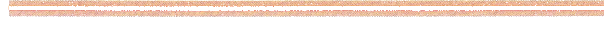
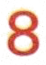
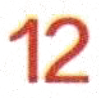
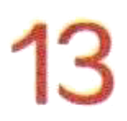
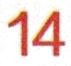
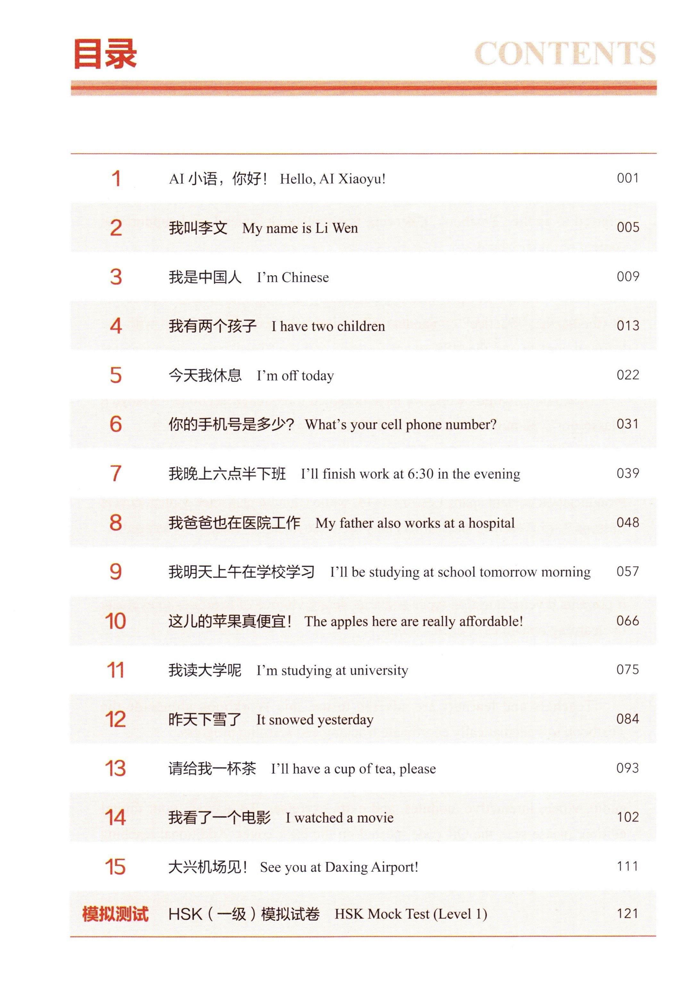

1AI 小语，你好！Hello, AI Xiaoyu!Привет, AI Сяоюй!
001
我叫李文My name is Li WenМеня зовут Ли Вэнь
005
我是中国人I'm ChineseЯ китаец
009
我有两个孩子I have two childrenУ меня двое детей
013
今天我休息I'm off todayЯ сегодня отдыхаю
022
你的手机号是多少？What's your cell phone number?Какой у тебя номер телефона?
031
我晚上六点半下班I'll finish work at 6:30 in the eveningЯ закончу работу в 6:30 вечера
039
我爸爸也在医院工作My father also works at a hospitalМой отец тоже работает в больнице
048
我明天上午在学校学习I'll be studying at school tomorrow morningЯ буду учиться в школе завтра утром
057
这儿的苹果真便宜！The apples here are really affordable!Яблоки здесь очень доступные!
066
我读大学呢I'm studying at universityЯ учусь в университете
075
昨天下雪了It snowed yesterdayВчера шел снег
084
请给我一杯茶I'll have a cup of tea, pleaseЧашку чая, пожалуйста
093
我看了一个电影I watched a movieЯ посмотрел фильм
102
大兴机场见！See you at Daxing Airport!Увидимся в аэропорту Дасин!
111
模拟测试 HSK（一级）模拟试卷HSK Mock Test (Level 1)Пробный тест HSK (Уровень 1)
121

目录CONTENTSAI小语，你好！Hello,AI Xiaoyu!0012我叫李文My name is Li Wen0053我是中国人 I'm Chinese009我有两个孩子I have two children01345今天我休息 I'm off today0226你的手机号是多少？What's your cellphone number?0317我晚上六点半下班I'1l finish work at6:30 in the evening0398我爸爸也在医院工作My father also works at a hospital0489我明天上午在学校学习 I'll be studying at school tomorrow morning05710这儿的苹果真便宜！The apples here are really affordable!06611我读大学呢 I'm studying at university07512昨天下雪了It snowed yesterday08413请给我一杯茶 I'll have a cup of tea,please09314我看了一个电影I watched a movie10215大兴机场见！ Seeyou at Daxing Airport!111模拟测试HSK(一级）模拟试卷HSK Mock Test (Level 1)121